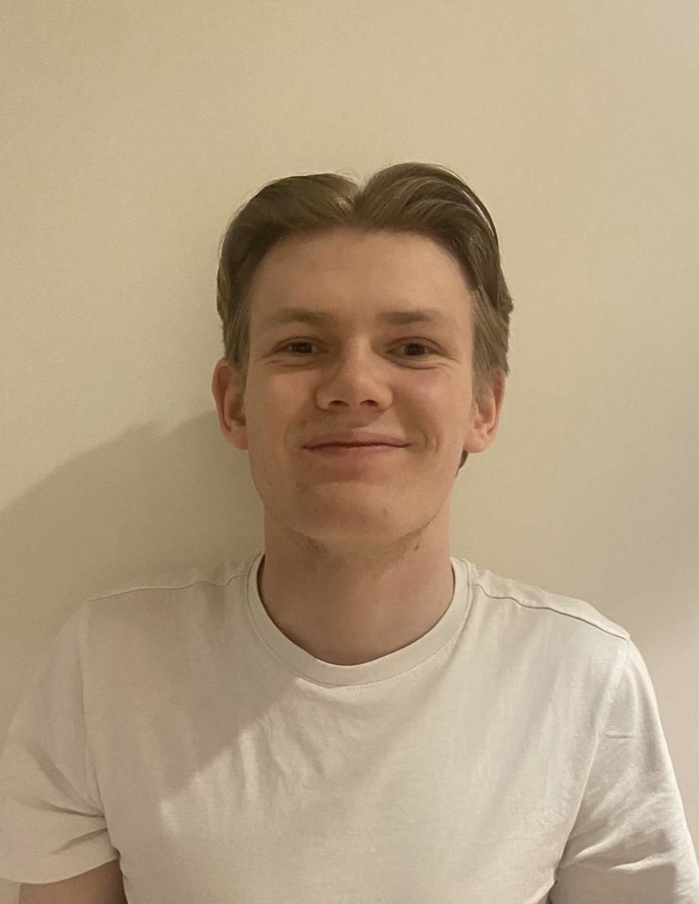

Om meg
Elias Engesli
Wireframe-ansvarlig i prosjektet Boligbyen Bergen A/S.
Litt om meg selv
Hvem er jeg?
Jeg liker å være med venner, slappe av og gjøre ting jeg synes er gøy. På fritiden liker jeg å holde på med forskjellige interesser. Jeg synes det er viktig å ha en god blanding av skole, fritid og venner.

Fritid
Mine interesser
Jeg liker å trene og jogge på fritiden. Det er en fin måte å være aktiv på og komme seg litt ut. Jeg synes også det er gøy å utfordre meg selv og prøve å bli bedre. Noen dager har jeg mer lyst til å trene enn andre, men jeg liker å variere hva jeg gjør.
En annen interesse jeg har, er koding. Jeg synes det er spennende å lære hvordan kode fungerer og hvordan man kan bruke det på forskjellige måter. Jeg lærer fortsatt mye, og noen ting kan være vanskelige, men det er interessant å forstå mer etter hvert.
| Interesse | Hva det går i |
|---|---|
| Trening og jogging | Være aktiv og utfordre meg selv. |
| Koding | Lære hvordan kode fungerer og kan brukes. |
| Venner | Slappe av og være sosial. |
| Spill og PC | Variasjon i hverdagen. |
En vanlig dag
På fritiden
Når jeg ikke trener, jogger eller holder på med koding, liker jeg å slappe av og være med venner. Noen ganger liker jeg å spille eller bare bruke tid på PC-en. Jeg liker at jeg kan gjøre forskjellige ting, så dagene ikke blir helt like. Det kommer ofte an på humøret mitt og hva jeg har lyst til å gjøre. For meg er det viktig å ha tid til både interesser og folk jeg liker å være sammen med.